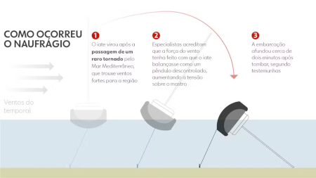
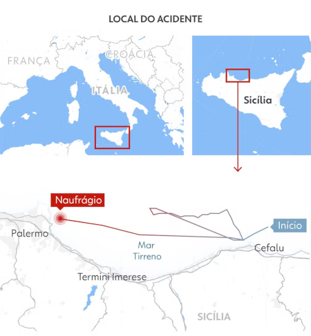
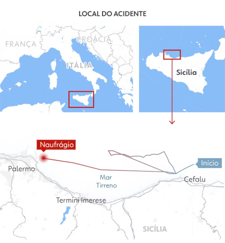
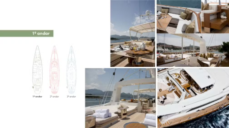
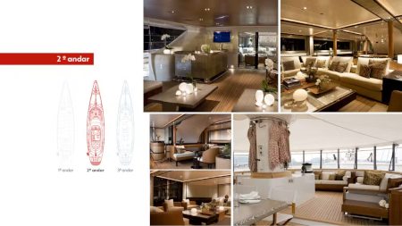
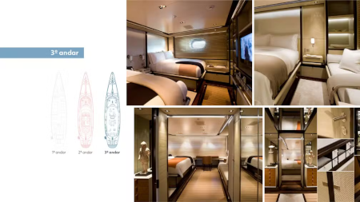
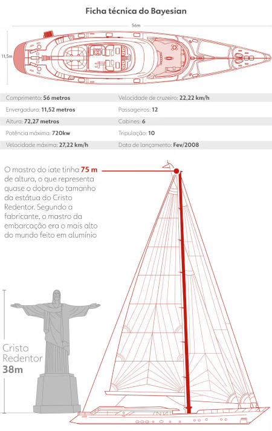
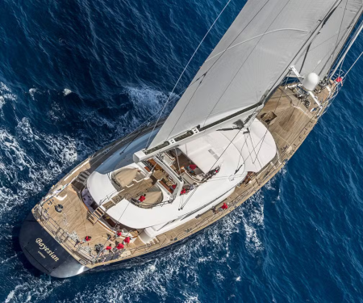

Noticias News
Mergulhadores encontram corpo de bilionário, filha e mais três pessoas em iate que naufragou na Itália, diz jornal
Segundo jornal britânico, chefe da Defesa Civil da Sicília disse que corpo de Mike Lynch, conhecido como o 'Bill Gates do Reino Unido', está entre os cadáveres recuperados. Iate afundou após tornado na costa de Palermo. Oficialmente, as identidades das vítimas não foram divulgadas pelas autoridades.

Mergulhadores que buscam pelos desaparecidos no naufrágio do iate de luxo na costa da Sicília, na Itália, encontraram cinco corpos dentro da embarcação nesta quarta-feira (21). Um dos corpos, de acordo com o jornal britânico "Daily Telegraph" com base em informações da agência de proteção civil da Sicilia, é do bilionário britânico Mike Lynch. Outro dos corpos encontrados nesta quarta, ainda de acordo com a publicação, é o da filha de Lynch.
Autoridades locais na Sicília se recusaram a comentar a reportagem. Oficialmente, as identidades das vítimas ainda não foram divulgadas pelas autoridades. Três dos corpos foram trazidos para terra e levados para hospitais próximos para identificação formal. Os outros dois cadáveres recuperados nesta quarta ainda estavam sendo retirados da água até a última atualização desta reportagem.
Conhecido como "Bill Gates do Reino Unido" por ser o primeiro magnata da tecnologia no país, o bilionário Mike Lynch estava a bordo do iate, um veleiro de luxo batizado de Bayesian, com a esposa, a filha e amigos. Segundo a imprensa britânica, ele celebrava uma recente absolvição em um processo que acusava sua empresa de softwares, a Autonomy, de fraude.
Ainda não havia informações sobre a identidade dos outros corpos resgatados nesta manhã até a última atualização desta reportagem.
Número de mortos
Com os corpos encontrados nesta quarta, o número de mortos no naufrágio, causado pela passagem de um tornado na costa da Sicília, subiu para seis. No dia do acidente, um corpo já havia sido encontrado horas depois de o barco afundar.
No total, 22 pessoas estavam a bordo do iate, mas 15 foram resgatadas com vida no dia do naufrágio.
Um dos corpos encontrados nesta quarta foi levado à costa por uma embarcação do Corpo de Bombeiros. A recuperação demorou porque a entrada das cabines está bloqueada por móveis e outros objetos.
Autoridades locais não haviam anunciado oficialmente a identificação dos corpos até a última atualização desta reportagem. Parentes dos desaparecidos foram ao porto de Palermo após os corpos serem encontrados, segundo o jornal italiano "Corriere Della Sera".
Além de Lynch e de sua filha, também estavam desaparecidos, até a última atualização desta reportagem, o presidente do conselho de administração do banco de investimentos Morgan Stanley International, Jonathan Bloomer, e sua esposa, além do advogado Chris Morvillo, que defendeu Mike Lynch em seu julgamento nos Estados Unidos, e sua esposa.
Retirada gradual de corpos

A agência de notícias italiana Ansa informou que a operação de retirada dos corpos está sendo feita de forma gradual. Os mergulhadores estariam fazendo uma parada a 20 metros de profundidade antes de trazer os corpos à superfície.
Mais cedo, quando as buscas foram retomadas, havia pouca esperança de encontrar sobreviventes.
Os mergulhadores conseguiram entrar no veleiro, que está a 50 metros de profundidade, na terça-feira, mas, como ele está deitado de lado e os espaços são pequenos, a equipe tem apenas entre 8 e 10 minutos para inspecioná-lo antes de ter de voltar à superfície.
Devido às dificuldades, os mergulhadores contam com a ajuda de um veículo subaquático controlado remotamente para as buscas. O robô é capaz de operar no fundo do mar até uma profundidade de 300 metros e tem autonomia entre 6 e 7 horas (veja vídeo abaixo).
Um helicóptero de mergulhadores dos bombeiros de Gênova, da mesma equipe que atuou após o naufrágio do Costa Concordia, em janeiro de 2012, chegou para ajudar nas buscas.
Investigação

Em paralelo às buscas, a polícia e a Procuradoria locais já começaram a investigar o que causou o naufrágio do iate, batizado de Bayesian. Apesar da forte tempestade, embarcações grandes são consideradas muito seguras e são difíceis de virar.
Na terça-feira, o comandante do Bayesian, James Catfield, 51 anos, foi interrogado por mais de duas horas. Catfield foi uma das 15 pessoas que conseguiram ser resgatadas momentos após o naufrágio do iate.
A partir do relato do comandante, procuradores buscaram reconstituir os últimos momentos antes de a embarcação afundar e saber detalhes técnicos úteis para as investigações.
Segundo uma primeira inspeção externa no iate, no fundo do mar, o casco não apresentou vazamentos, e o mastro principal de alumínio, de 75 metros de altura, estava intacto. A fabricante do barco afirma que o mastro é o maior do mundo feito de alumínio.
O naufrágio
A passagem de um tornado incomum no Mar Mediterrâneo fez com que o iate virasse. Veja o momento no vídeo acima.
"O vento estava muito forte. O mau tempo era esperado, mas não nessa magnitude", disse um oficial da Guarda Costeira em Palermo à agência de notícias Reuters.
Por causa do horário, a maioria dos passageiros estava dormindo nas cabines do iate. Uma das sobreviventes contou que acordou com a água dentro da embarcação e foi para o convés. Ela conseguiu sair com a filha dela, que tem um ano de idade.
A ocorrência de tornados no Mar Mediterrâneo é um fenômeno raro. Entretanto, nos últimos dias, tempestades e chuvas pesadas atingiram várias regiões da Itália, causando inundações e deslizamentos de terra.
As buscas pelos desaparecidos envolvem embarcações de resgate e uma equipe de mergulhadores.
 

Saiba mais sobre o barco
A embarcação que naufragou foi fabricada em 2008 e tem preço inicial de venda estimado em mais de R$ 200 milhões. O iate tinha capacidade para 22 pessoas, sendo 12 passageiros e 10 tripulantes.
Confira no infográfico a seguir os detalhes do iate.
1.Topo
O topo do iate tinha uma área de convivência aberta, com sofás e mesas. Os decks foram feitos em madeira Teca, usada na construção naval e móveis de luxo.
2.Salas
O interior da embarcação foi projetado pelo arquiteto francês Remi Tessier e lhe rendeu um prêmio em 2008. O design de interior tem estilo japonês e contava com salas de estar e de jantar.
3.Suítes
A parte de baixo do iate era composta por dormitórios, banheiros, uma cozinha e uma área reservada para o maquinário. Ao todo, eram seis suítes com capacidade para 12 passageiros, além de dormitórios para 10 tripulantes.
  Leia Também
- Desaparecidos em naufrágio de iate na Itália podem estar em bolsões de ar dentro do barco, diz jornal
- Naufrágio de iate de luxo na Sicília: veja quem são os 6 que seguem desaparecidos
- 'Misteriosa coincidência': coacusado de fraude com Mike Lynch morre em acidente dois dias antes de naufrágio na Itália
caso queira mais noticias como essa clique aqui para ir para a página do G1